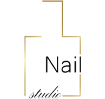
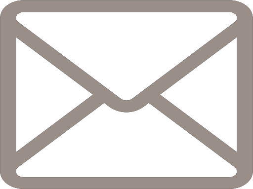
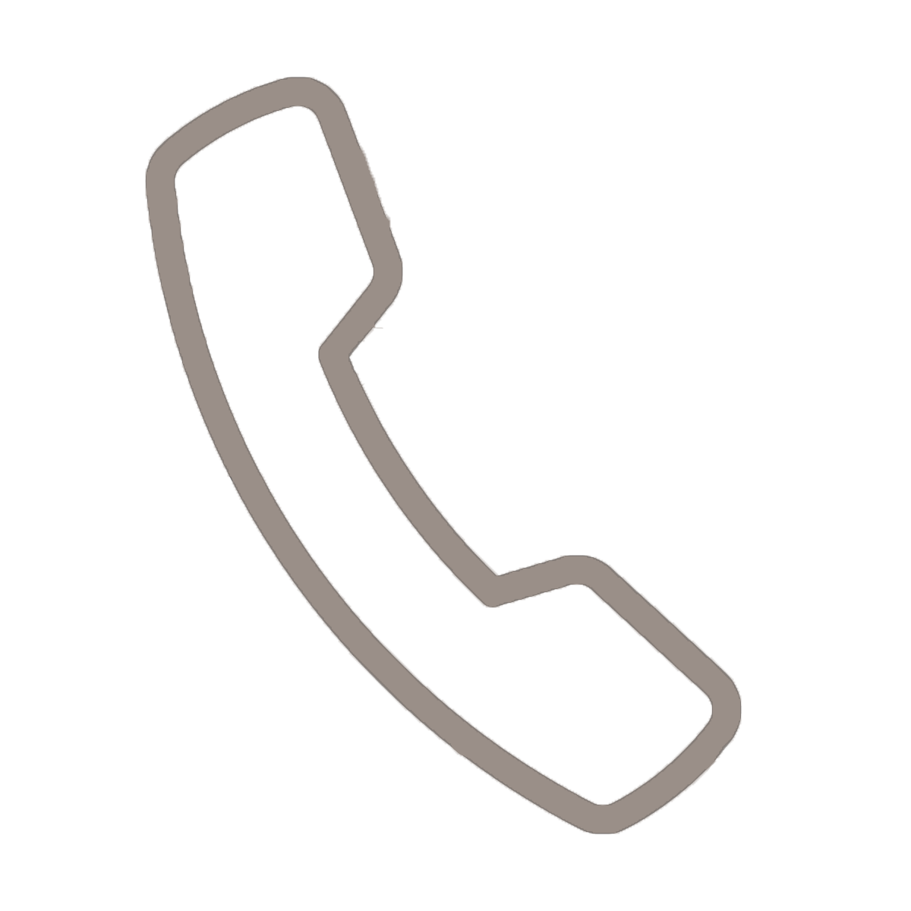

MANICURE EXPRESSOWY
Idealne rozwiązanie dla Pań, które są w ciągłym biegu i w szybki sposób chcą mieć piękne paznokcie. Zabieg polega na nadaniu paznokciom odpowiedniego kształtu, skórki wokół paznokci zostają odepchnięte. Dodatkowo można pomalować odżywką lub kolorowym lakierem.
MANICURE KLASYCZNY
MANICURE KLASYCZNY
Tradycyjny zabieg polegający na pielęgnacji naturalnej płytki paznokcia i skóry dłoni. Podczas zabiegu paznokcie są opiłowywane, skórki wokół paznokci całkowicie usuwane w sposób mechaniczny. Następnie paznokcie są malowane odżywką lub wybranym kolorem.
MANICURE GEL COLOR
Gel to lekka formuła, trwałego żelu kolorowego przepuszczającego powietrze. Nie niszczy płytki paznokcia przy nakładaniu i zdejmowaniu. Utrzymuje się 2–3 tygodnie. Technika nakładania tego żelu jest niemal identyczna jak malowanie lakierem. Gel utwardzany jest pod lampą LED.Idealne rozwiązanie dla kobiet ceniących naturalny wygląd dłoni i chcących wzmocnić swoje paznokcie.Zabieg zawiera: opracowanie skórek (z wycięciem), opracowanie kształtu paznokci, nałożenie lakieru Gel, wmasowanie kremu i oliwki na skórki.
MANICURE EXPRESSOWY PEDICURE
Najlepsze rozwiązanie dla tych, którzy chcą odświeżyć szybko swoje stopy.Podczas zabiegu stopy relaksują się w kąpieli, paznokcie są wyrównywane, skórki odpychane, odświeżenie pięt. Dodatkowo możesz zastosować odżywkę lub pomalować je lakierem.
ZAPRASZAMY DO ZAPOZNANIA SIĘ Z NASZĄ OFERTĄ I WIZYTY W NASZYM GABINECIEGODZINY OTWARCIA
GODZINY OTWARCIA:
pn - pt:
8:00 - 21:00
sob-nied:
9:00 - 20:00
KONTAKT:


nataliastudionails@gmail.com
+48 731 127 841